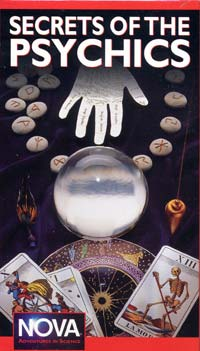

La no sorda

La lectora “Mary” es una intérprete profesional para sordos, y nos escribió sobre un caso en el que la contrató una escuela para interpretar para una mujer extraña de quien Mary sabía que podía oír perfectamente, pero aún así simulaba ser sorda. La farsante, sin embargo, se delató con un simple error, como veremos…
… cuando levantaba la mano en clase para hacer una pregunta, sólo hacía signos y esperaba que yo los expresara vocalmente por ella (interpretando sus signos a inglés hablado para que lo oyeran el maestro y la clase). Bien, esta es más o menos la parte más difícil del proceso de interpretación, y un millón de veces más difícil cuando se interpreta bajo coerción y cuando nos observa una completa chiflada. En un momento, hizo gestos para hacer una pregunta a la profesora y yo estaba preparándome para expresarla. La clase estaba en silencio y todos los ojos estaban fijos en mí. Empecé a traducir en voz alta y, dado que era una situación incómoda para mí, de inmediato cometí un error. Bueno, ya que ella escucha y pudo oír mi error, suspiró ruidosamente y dijo con exasperación (en su propia voz): “Bueno… empecemos de nuevo”.
Querría haber abofeteado a mi jefe por ponerme en esa clase.
Luego del semestre, hablé con otra estudiante de la misma clase. Me dijo que le parecía que la situación era rara, una persona que hablaba que hacía que alguien más hablara por ella, pero supuso que era algo que no entendía y lo dejó así.
Más tarde descubrió que esta mujer “sorda” era una intérprete de lenguaje de signos del más alto nivel en una universidad local. También trabajaba en una tienda que provee dispositivos tecnológicos para los sordos. Mi punto de vista sobre la situación: ella estaba obsesionada con lo genial que era el lenguaje de signos y quería ser sorda. En la universidad, he visto en verdad a varias personas posar como sordos, de modo que no me sorprende demasiado. Me sorprendió, sin embargo, el ver cómo mi departamento gastó cientos de dólares proveyendo servicio a una persona que oía sólo porque vinieron con la nota del doctor, mágica y todopoderosa.
Sí… todavía me dura la amargura.
Entendemos tu frustración, Mary…
Otra cuestión de gustos
Después de todos esos disparates sobre la “Pinza para vino”, el lector Michael Warren nos informa de su propio y repentino experimento sobre el gusto y la expectativa:
Leí con vivo interés su comentario sobre la Pinza para vino, y el poco original comentario de Dennys Lynch sobre que el gusto es subjetivo. En mi experiencia, el gusto no sólo es subjetivo, es susceptible de sugestión, como demuestra mi experiencia personal.
A principio de los ochentas trabajé en cierta franquicia de cigarrerías y casas de regalos que poblaba los paseos de compras en todo Estados Unidos. Vendíamos un producto llamado “Snuff It”, un pequeño cilindro de cerámica o metal más o menos del tamaño de un carrete de hilo con un hoyo en un extremo del díametro de un cigarrillo, y un hoyo un poco más grande del otro lado. El propósito del producto era que pudiera ponérselo en un cenicero, poner un cigarrillo en él, y el cigarrillo se apagaría inmediatamente por falta de oxígeno. Simple, ¿eh?
Como sea, un día en el que estaba aburrido como de costumbre, varios adolescentes vinieron a curiosear. Uno señaló un colorido “Snuff It” cerámico de dos tonos y me preguntó qué era.
La cerámica del producto, expliqué, fue fabricada con un relleno radiactivo inerte que se combinaba con los radicales libres del tabaco, les quitaba la cáscara de la valencia exterior, decreciendo en consecuencia la ionización negativa y promoviendo un humo más suave para el cigarrillo. Los impresionó mi cháchara científica explicativa, pero lo hizo más cuando ofrecí demostrarles el producto en uno de sus cigarrillos. Mientras observaba, atravesé su cigarrillo a través del Snuff It, explicando que había que hacerlo lentamente para que funcionara correctamente, con el extremo pequeño del producto orientado hacia el norte magnético. En el momento en que el adolescente número uno empezaba a ponerme el cigarrillo desionizado en su boca y a encenderlo, lo detuve y le dije: “Tengo la obligación legal de decirle que, aunque sólo ocurre en uno de cada millón de casos,, algunas personas tienen una reacción negativa al producto; por lo tanto, si le salen ampollas en los labios, deje de usar el producto inmediatamente”. Estaban correctamente impresionados con este refuerzo psicológico, y un poco preocupados. El adolescente número uno dijo que lo fumaría luego de almorzar.
Casi una hora más tarde los tres adolescentes deambularon de nuevo por la tienda. “¿Qué gusto tenía su cigarrillo?”, le pregunté al adolescente nº 1. “¡Hey, estuvo fantástico, hombre”, respondió. “De verdad pude darme cuenta de la diferencia. Tengo que conseguirme uno de ésos”. En ese momento le expliqué que era sólo su imaginación, que yo había estado tomándole un poco el pelo. “No”, interrumpió el adolescente número dos. “No es su imaginación. Él me dejó dar un par de pitadas. Fue el mejor cigarrillo que fumé alguna vez”.
Con frecuencia me pregunto si a alguno de ellos le salieron ampollas en los labios.
¿O desarrollaron cerebros y dejaron de fumar?
Más sobre esa maldita pinza
El lector Nicolas Vivant nos sugiere visitar http://www.dansdata.com/wineclip.htm para encontrar una excelente discusión sobre la Pinza para vino (“Wine Clip”) y la realidad tras ella. Vayan e infórmense. Otro lector (quien obviamente no es estadounidense) opinó:
… cuando uno ve los testimonios “abrumadores” (vea http://skepdic.com/testimon.html y http://www.thewineclip.com/cgi-bin/category.cgi?category=tech_pvr) de varios supuestos respetados expertos en vino respecto a los extraordinarios atributos de “The Wine Clip”, y luego la prueba en condiciones controladas y descubre que parece no hacer nada, hay que preguntarse cuán objetiva está siendo esta gente en verdad. No hay razón para suponer que los aficionados al vino son menos engañables que los entusiastas de la alta fidelidad que están convencidos de que pueden escuchar la diferencia entre cables baratos y caros para parlantes incluso cuando, sin que ellos los sepan, ¡los cables no se cambiaron en absoluto! En http://home.austin.rr.com/tnulla/duncable.htm hay una discusión de esta situación.
¿Los Estados Unidos modernos son un país que necesita que exista un organismo para “Defender la enseñanza de la evolución en las escuelas públicas”, por amor de Dios? Vaya a http://www.ncseweb.org para verlo. No es extraño que haya mercado para estos imanes para vinos.
Estoy demasiado avergonzado para hacer comentarios. Además, el grupo para “Defender la enseñanza de la evolución en las escuelas públicas” ha estado perdiendo terreno, por lo que sé…
Supongo que Stern tampoco lo sabía
El lector John Lee (y muchos otros, gracias) nos informaron así con respecto a la referencia a la debacle más reciente de James Van Praagh en el programa de Howard Stern:
James, ¡le gustará saber que la aparición reciente de Van Praagh en el programa de Howard Stern no fue una repetición! Fue el 18 de octubre de 2004, y estuvo allí para promocionar su película para televisión en CBS para el domingo 24 de octubre. Yo ya sabía esa mañana que no era una repetición, de modo que quedé estupefacto cuando Van Praagh afirmó que el cuerpo de Levy sería hallado “con el tiempo”, ¡cuando de hecho ya había sido hallado más de dos años antes! Casi lo maldigo mientras estaba viajando en mi auto rumbo al trabajo y proferí algunos graves improperios sin poder creerlo, ¡dado que en ese momento había oído a Van Praagh refutarse a sí mismo frente a 12 millones de personas! ¡Lo que me desilusionó fue que nadie en el programa recordó que Levy ya había sido encontrada, y nadie señaló su grosero error!
Pero el momento más gracioso fue cuando señaló a la buena amiga de usted, Sylvia [Browne], y la criticó abiertamente; la acusó (junto con “otros” que no mencionó) de ser un fraude, de opinar disparates, y de ser irresponsable y sacar ventaja de la gente con problemas emocionales. Howard replicó inmediatamente: “¡Pero… también lo hace USTED!”. James sólo pudo emitir una risa nerviosa como respuesta y luego cambió rápidamente de tema.
Me parece difícil de creer que ni Van Praagh ni la producción de Howard Stern supieran que el cuerpo de Levy ya había sido encontrado hace mucho; fue una noticia resonante en su momento. Caray, ¡parece que esos poderes psíquicos no son tan confiables! ¿Quién se lo iba a imaginar?
Una autora de historias de fantasmas, sorprendida
La lectora Sherry Austin escribe:
Estimado Sr. Randi, tengo que dejar de postergar el agradecerle por todo lo que hace.
Me hallo en una posición inusual. Soy autora de un libro de historias de ficción (bueno, ¡claro que son de ficción!) sobre fantasmas, y cuando las escribí subestimé seriamente la omnipresencia de la creencia literal en lo paranormal. Para promocionar mi libro, participé en muchos eventos (firma de libros, charlas, etc.) a lo largo de dos años. Estuve mucho tiempo conversando con la gente, y aún estoy entre molesta y apenada por este fenómeno increíble de la creencia en todas las cosas que están más allá de la razón. Francamente, aún no puedo superarlo. No puedo contarle cuántos miles de personas me han preguntado si las historias son “ciertas”, y son incapaces de siquiera seguirme al nivel siguiente, cómo actúan como si los hubiera estafado inventando historias de fantasmas cuando hay tantas historias “verdaderas”, cómo se ofenden cuando expreso la más ligera duda. Es realmente extraordinario.
Sólo puedo imaginar cuán harto estará usted de todo esto. ¿Qué pasó con nuestra capacidad de pensar? Y ahora, luego del 3 de noviembre, cuando el resto del mundo sabe lo que en la Franja Bíblica hemos sabido desde hace un tiempo (que la derecha religiosa tiene un tremendo poder) en efecto siento que es una batalla cuesta arriba.
Pesqué el final de uno de los documentales de usted en televisión hace un tiempo. En él, usted se hallaba cerca de un curso de agua, creo, y decía, con la voz en off, que había mucho que aprender, tantas cosas maravillosas en el mundo real… Como sea, espero usar mis talentos de ahora en adelante para difundir ese evangelio en particular. (Debo decir que mi sitio web, a propósito, no es totalmente puro. Aún está evolucionando lentamente para mostrar más abiertamente mis tendencias naturalistas.) Gracias de nuevo.
Sherry, ese documental fue el programa de 1993 del canal NOVA de la televisión abierta titulado “Secretos de los psíquicos”. En esa escena, me hallaba en un puerto en Moscú, mirando hacia el Kremlin y haciendo mis comentarios finales del programa. El texto completo era:
Mucha gente odia mi escepticismo, y creo que entiendo el porqué. Los psíquicos ofrecen maravillas y posibilidades interminables en un mundo que con frecuencia parece difícil y mundano. Prometen salud, riqueza, sabiduría, vida eterna. Pero si examina el registro, no son los psíquicos sino los científicos prácticos los que en verdad han proporcionado las maravillas que mejoran la vida humana. Y para mí, la ciencia describe un mundo mucho más interesante que cualquier fantasía psíquica. Es un buen mundo; no es perfecto, pero es nuestro. Así que mejor aprendamos a vivir con él, tal como es.
No cambiaría una palabra de ese pensamiento espontáneo, aunque ha pasado más de una década desde que lo expresé, y en nuestro mundo han pasado muchas cosas.
(Ofrecemos a la venta ese video de NOVA en la JREF. Visite http://www.randi.org/shopping/index.html#video)
Psíquicos en la corte
El lector Pedro Bonatto de Castro, un estudiante universitario de física en Curitiba, Brasil, escribe:
Le escribo para llamar su atención a la noticia más abyecta de Brasil en relación con los fenómenos paranormales. Probablemente conozca al psíquico brasileño Chico Xavier. Globo TV, una importante cadena televisiva de Brasil, hizo un programa especial sbore su trabajo para “ayudar” en algunos casos de homicidio. Bien, aparentemente “psicografió” (es traducción literal del portugués, no sé si será igual en inglés: así se refiere uno a la carta de un espíritu canalizada por un psíquico) a la víctima librando al acusado de cualquier intento de daño. El problema es que las cartas psicografiadas fueron admitidas como evidencia en la corte.
Esto ha ocurrido en al menos tres casos, en los que el acusado fue librado de culpa y cargo por el jurado principalmente debido a las cartas. Se pone peor: una encuesta reciente en Internet en el sitio web de Globo indica que el 77,5% de la gente cree que este tipo de lectura psíquica debería ser admitida como evidencia en la corte.

Bueno, Pedro, nunca supe del Sr. Xavier, pero debe usted recordar que hay cientos de personas como él, ejerciendo el mismo fraude, que se hacen famosos en su mercado local por un tiempo breve, y luego no se sabe más de ellos. No podemos estar al día con todos ellos.
Aquí en los EE.UU., se ha mencionado seriamente la astrología en nuestras cortes, y en la Casa Blanca de Campanita/Reagan, así que no nos sorprende en absoluto lo que acepta la ley brasileña. Allá por 1991, yo mismo fui citado aquí en un caso local como consejero de la defensa. Nos quedamos atónitos al escuchar al juez afirmar antes de que el caso avanzara que las capacidades psíquicas habían sido firmemente establecidas por la ciencia, y que no toleraría que ese hecho fuera negado. Afortunadamente para la causa de la justicia, la “psíquica” demandante, Penny Pellito, fue tonta y equívoca en tal medida, que el caso se volvió en su contra y debió pagar daños y costas a los acusados.
Pellito ha declarado que perdió sus maravillosos poderes luego de que algunos trozos de madera cayeron en su cabeza mientras estaba rebuscando en un cubo en Home Depot, a quien posteriormente demandó por millones de dólares. Hubo un rumor de que cuando escuché su afirmación, murmuré “No fue bastante madera”, pero no es cierto, lo juro.
Un nuevo Moon [1]
En la década de 1970 los “Moonies” surgieron como un culto aún creciente que seguía las estrafalarias ideas del Reverendo Sun Myung Moon, quien fundó la Iglesia de la Unificación. Moon ahora ha avanzado mucho más allá de ese humilde comienzo para convertirse en amigo de los presidentes, poseer el Washington Times y alardear de su estatus de multimilmillonario, a pesar de su condena por parte de la IRS y las vacaciones resultantes durante 13 meses en una prisión federal en 1984.
Bien, hay un nuevo Moon en el horizonte [1], con una organización que alardea de tener centros en Georgia, Hawaii, Illinois, Maryland, Nueva Jersey, Nueva York, California del Norte, Texas y Virginia. Su nombre es Ilchi Lee, también conocido como Seung Heun Lee, fundador de los Centros Dahn y muchas otras organizaciones. Y adhiere a la “Respiración cerebral”, sea eso lo que fuere.
Su “nombre espiritual” Ilchi significa literalmente “un dedo apuntado a la verdad”, nos dicen. Me pregunto a qué dedo se referirá…

El grupo de Lee afirma que está aquí para “salvar al mundo” por medio de la “energía” y la “sanación”. Supuestamente esto lo hacen “compartiendo amor con el mundo”. Lee, que no iba a ignorar ese viejo engaño favorito de los místicos (que los humanos usan sólo el 10% de sus cerebros) dice:
Digo “¡busquen el 90%!”. Quiero decir que tomen el control del 90% de su cerebro que todavía no están usando. La meta del desarrollo de nuestro cerebro reside en la instalación de la Paz. La iluminación no tiene significado si no contribuye a la paz, la salud y la felicidad. De modo que ¿dónde ocurre la iluminación? Ocurre en nuestro cerebro. Me debatí buscando esa respuesta durante 20 años, y el resultado es la Respiración Cerebral y la HSP.
(“HSP” es “Heigtened Somato-Sensory Perception”, “percepción somático-sensorial aumentada”, por si no están al día con la última palabrería.)
El “Centro Ilchi para la investigación cerebral” vende productos como collares y brazaletes que, afirman, “ayudan a que fluya la energía”, un “cerebro de poder” de US$ 90, y un “energizador portátil para el cerebro” con la forma de un bulto amarillo y esponjoso que vibra y cabe en la palma de la mano. Lee predica que al principio, él sólo “transfiere energía cósmica a la gente”. A los estudiantes nuevo se les toman “fotografías del aura”, y luego se les hace una “verificación de energía” antes de que se cree para ellos un “plan de capacitación individualizado”. Y Lee ha establecido “Pazología para los humanos de la Tierra”, todo como parte de la atmósfera cariñosa, amorosa, vaga, soñadora e infantil en la que los ingenuos y los desesperados son atrapados y sumergidos con tanta facilidad.
Lee afirma que su centro estudia el cerebro, la “Respiración cerebral” y la HSP “junto con el Instituto de Investigación Cerebral de Corea, la Universidad de California, el Departamento Médico de Harvard, y el Departamento Médico de Cornell”. Francamente, lo dudo. Quizá algunos lectores puedan querer preguntar en Harvard y Cornell y si están asociados con Lee. Parece que dio una conferencia sobre Divinidad en Harvard, pero eso no significa que Harvard esté “asociada” con sus excéntricas nociones. En su sitio web, leemos que la Universidad de Califoria en el Centro de Irvines para el Envejecimiento Cerebral y la Demencia está estudiando específicamente su metodología. No es así, dice su director, el doctor Carl Cotman: “No lo apoyamos. En lo absoluto”.
Esta es otra de esas confabulaciones al estilo Moonie en las que los “estudiantes” son alentados a dejar a sus familias y trabajar sólo por cama y comida, haciendo proselitismo a otros constantemente y adorando a su gurú. Muchas de las víctimas se despiertan antes de ahogarse en este jarabe de disparate y promoción exagerada, pero los que no abandonan ni se suicidan envejecen y empobrecen cada día, tanto financiera como emocionalmente. Pero está a salvo de la intervención gubernamental; el Reverendo Moon, veterano de la estafa, es la prueba viviente de la protección y apoyo de este país a semejante charlatanería.
Aún evitan la realidad
El lector Richard Schultz nos informa que la reciente “11ª conferencia internacional sobre ciencia nuclear de la materia condensada” (antes conocida como la “Conferencia internacional sobre la fusión fría”, pero que obviamente intenta escapar de esa etiqueta cada vez más negativa) concluyó con un discurso del premio nóbel Brian Josephson titulado “Buenas y malas maneras de hacer ciencia”. ¿En serio? Vea http://www.randi.org/jr/112902.html [en inglés] para ver cómo trata este hombre a la ciencia y sus obligaciones. Y no se olviden de que es admirado por Uri Geller, quien a su turno admira y cree también al Doblacucharas…
Hagan esto
Vayan ahora (inmediatamente) a http://www.jonronson.com/goats_04.html y luego encarguen este libro. Es algo que todos debemos saber, y perder sueño por ello… Luego vayan a http://www.badpsychics.co.uk/ y descubran un excelente lugar para examinar material.
El insumergible Kevin Trudeau
Trudeau, quien aparentemente participa en todo fraude que ande dando vuelta por ahí, surgió nuevamente en TV promocionando alguna clase de nueva “crema antiarrugas” llamada “Firmalift”, con poderes milagrosos ilustrados por sorprendentes fotos de “antes” y “después” de caras que parecen haber mejorado notablemente y con mucha rapidez… en cuestión de minutos, de acuerdo con la promoción fraudulenta del producto que Kevin presenta. Esas fotos dependen tan obviamente de cambios de iluminación y contraste para fingir la supuesta mejora, que cualquier niño puede descubrir esa parte.

Pero el truco que realmente debería llamar la atención del potencial comprador es una estafa tan obvia que no puedo creer que incluso Kevin la haya usado: anuncia alegremente que se ha bajado el precio original de US$ 140 de esta maravillosa crema (¡sólo para este aviso de TV!) a sólo US$ 7,99! ¡Un ahorro del 94% debería hacer que se amontonen los pedidos, incluso si no hay una sola arruga a la vista!
¡Hey, Kevin! ¿Qué sigue? ¿Un balde de vapor del Titanic, un destornillador nuevo y mejorado para zurdos, o gotas para ojos homeopáticas? No, nadie creería en la homeopatía, ¿verdad?
Esto no es racional
Nuestro lector el doctor Paul Flewers del King’s College de Londres está alarmado con razón:
He intercambiado correspondencia con varios amigos racionalistas sobre la proliferación de cursos pseudomédicos que se ofrecen en las universidades británicas (le envié a usted alguna información sobre esto la semana pasada) y uno de ellos me señaló el sitio de Angie Buxton-King, http://www.angiebuxton-king.com. Esto realmente me sorpendió. He aquí una cita en relación con el “trabajo de hospital” de Angie:
Angie ha trabajado en el Hospital del Colegio Universitario durante los últimos cinco años. Es la única sanadora actualmente empleada como sanadora por el NHS [Servicio Nacional de Salud]. Angie es la Sanadora/Directora del equipo de terapia complementaria en el UCLH. El equipo le ofrece a los pacientes de la Unidad de Hematología sanación, aromaterapia, terapia psicológica, hipnoterapia y reflexología junto con sus protocolos convencionales. […] Muchos pacientes han usado la sanación para ayudarlos a aliviarse de efectos secundarios, dolor, y la depresión y el estrés, todo lo cual puede ayudar a crear una actitud más positiva, lo que a su vz puede mejorar en gran medida la calidad de vida de un paciente.
Me asombra que un hospital del Servicio Nacional de Salud tolere esta clase de cosas. Es una ironía que el Hospital del Colegio Universitario está asociado con el Colegio Universitario de Londres, que fue establecido sobre una base específicamente racionalista.
Doctor, ¡sólo podemos imaginarnos lo que ofrecerían en una Universidad que fuera establecida sobre una base irracional!
Dudley… hazlo bien
El articulista Art Dudley de Stereophile Magazine debe tomar muchos antiácidos. Se confundió completamente en la edición de noviember de esa revista (la mencioné la semana pasada en http://www.randi.org/jr/111204hot.html#7 [y en su traducción]) y obviamente necesita respuestas simples a sus preguntas simples, sólo para calmar su inquietud. Aquí van.
El Sr. Dudley aparentemente estaba alarmado por el hecho de que cuestioné la confiabilidad de sus amigos comentaristas Frank Doris de “The Absolute Sound”; Clay Swartz, Clark Johnson, y David Robinson de “Positive Feedback”; Larry Kaye, Wayne Donnelly, y Bill Brassington de “fi”; Bascom King de “Audio”; Wes Phillips de “SoundStage”; Jim Merod de “Jazz Times”; Dick Olsher de “Enjoy The Music”; Peter y May Belt de “P.W.B. Electronics”; y Benjamin Piazza de “Shakti Innovations”, porque decidieron ignorar mi desafío de que que las ridículas “Piedras Shakti” que tan de corazón y tan profesionalmente apoyeron en representación de sus publicaciones, para sus consumidores. ¿O, quizás, estos columnistas y artistas de la estafa, preocupados con razón, corrieron hacia Dudley y le rogaron que los defendiera contra las realidades de la vida cuando se dieron cuenta de que los hechos se enfrentaban con ellos?
Como sea, Dudley decidió atacarme y desacreditarme astutamente. Hizo esto refiriéndose primero al hecho de que muchos actores y músicos habían cambiado “sus nombres de nacimiento en favor de nombres nuevos y mejores, cuando sus carreras levantaron vuelo”. Si, es muy cierto. Bernie Schwartz y Reiner Frigyes se convirtieron en Tony Curtis y Fritz Reiner, adoptando nombres más fáciles y más convenientes. ¡Pero Dudley no puede darse cuenta, ni aunque la vida le vaya en ello, de por qué yo hice lo mismo! Randall James Hamilton Zwinge se convirtió en James Randi (informalmente al principio, y legalmente en 1987) porque mi nombre original era incómodo y el elegido cabía mucho mejor en una marquesina. ¿Eso era muy difícil para que te dieras cuenta, Dudley?
Ocurre algo más con esta llamada de atención de Dudley; los niños que consultan Quién es quién u otros listados biográficos pueden descubrir mi apellido original (Zwinge) y se regocijan en enviarme cartas con ese nombre, como si hubieran descubierto astutamente un oscuro secreto… como hizo Dudley. Bueno, dejémoslo que se divierta. Puede que sea lo mejor que sabe hacer. También tiene un singular punto de vista de la realidad. Escribe:
Piensen en Zwinge como un intérprete de instrumentos metálicos; toca el mismo cuerno una y otra vez, esperando desesperadamente que la audiencia lo notará a él en lugar de a los otros intérpretes en el escenario. Zwinge es un ilusionista (que se describe a sí mismo como un mentiroso y artista del engaño) quien descubrió al principio de su carrera que podría ganar más dinero refutando el trabajo de otros ilusionistas. Así que se reinventó a sí mismo como James Randi y salió a la palestra con el nombre de, prepárense, Randi el Asombroso.
Bueno, amigos, en cada uno de mis resúmenes biográficos aparecidos en varios lugares del mundo, he plantado un fragmento de información familiar totalmente inventado, uno distinto para cada biografía. Luego, cuando un “lector” o “espiritista” me devuelve uno de esos fragmentos de información falsa, puedo saber dónde obtuvieron el artículo. En el caso de Dudley, revela con su devastador “golpe de efecto” de decir “que se describe a sí mismo como un mentiroso y artista del engaño” que ha estado en los archivos de Internet buscando detalles supuestamente sucioes que pueda usar. Esa cita apareció por primera vez en el New York Times en febrero del 2001, ha sido recogida y repetida en muchos otros lugares, y fue parte de mi discurso de apertura a mis audiencias, cuando hacía mi acto mágico de cabaret. Hay que entender que en este caso Dudley tiene que aferrarse a lo que pueda obtener.
Aunque obviamente ha estado en mi página web, y sabe que niego incansablemente la etiqueta de “refutador”, ignora ese hecho para enriquecer su historia. Y obviamente nunca ha visto mi acto, o sabría que realmente soy “Asombroso”.
Dudley sigue hasta afirmar que yo me ocupaba de investigar farsantes y que aquellos que rehusan respaldar sus afirmaciones profesionales (vean la lista en el segundo párrafo de esta sección, más arriba): “lo más bajo de la industria de la refutación”… Como mis lectores sabrán, esto es exactamente lo opuesto a la realidad, pero Dudley lo inventa con el mismo aplomo que muestra cuando escribe sus otras palabras sabias.
Dice Dudley: “[Randi] se ha tropezado con nuestro mundito”. No, Dud, he sabido de las falsificaciones realizadas en la tecnología “de alto nivel” desde hace décadas. La razón por la que las incluí en las discusiones de la JREF y las volví elegibles para nuestro premio es que, si alguna de esas afirmaciones fuera en verdad cierta, serían de naturaleza verdaderamente paranormal.
Dudley evita sabiamente especificar cómo he avergonzado a sus amiguitos con el asunto de las Piedras Shakti, eligiendo en lugar de ello referirse al premio de la JREF como “el último ‘Desafío de Randi’, aburrido y deshonesto intelectualmente”, optando en su lugar por
… lanzar un desafío propio, al cual bautizo en este acto como “El Desafío de Artie”. Le daré personalmente a Randall Zwinge muchocientos mil chorrocientos millones de dólares de mi propio dinero si puede responder dos preguntas a mi satisfacción:
¿Por qué un obstinado buscador de la verdad necesita cambiar su nombre?
Cuando firma como “Randi”, ¿le pone un punto a la “i” o le dibuja un corazoncito encima?
Las respuestas pueden serme enviadas sólo por e-mail, a la atención de John_Atkinson@Primediamags.com.
Bueno, Dudley, tu primera pregunta infantil ya fue respondida, más arriba, y cualquiera con una pizca de sensatez ya sabría la respuesta. Para responder la segunda, le punto un punto a la “i” de mi nombre. ¿Está bien? Ahora bien, ya que tuviste mucho cuidado en especificar “a [tu] satisfacción” como parte de tu cuento infantil e incoherente, y estás ofreciendo una suma ficticia que sólo un chico de 10 años podría encontrar impresionante, estás muy a salvo. Nos has dado a todos la impresión de una mente infantil que necesita unas nalgadas más que irse a la cama.
Nótese que uno no puede contactar directamente a este notable personaje; uno debe hacerlo por medio de su editor, como si Dudley fuera tan grande para preocuparse de los plebeyos. (La semana que viene tendremos aquí comentarios apropiados sobre su editor, Atkinson.) Y me pregunto qué quiere decir Dudley cuando dice que soy “deshonesto intelectualmente”. Quizá no puede comprender el lenguaje simple en el que está escrito el desafío.
No debo dejar de mencionar que en su diatriba del Stereophile Magazine, Dudley alegremente señala que en una de mis reseñas de charlatanería, en http://www.randi.org/jr/03-23-2001.html, se me lee refiriéndome al farsesco “Reloj Tice” como “Reloj Tate”, obviamente equivocando el nombre de los farsantes. ¡Caramba! ¡Me agarraste ahí, Dudley! Pero veo que olvidas citar al lector en ese mismo artículo que se refirió a “las chorradas y disparates que pueden leerse hoy en el Stereophile Magazine”… Y también escribí allí:
Esa revista, Stereophile, ha publicado artículos que hacen palidecer a la mayoría de las pseudociencias. El “Reloj Tate [sic]”, un reloj digital normal de Radio Shack tratado con nitrógeno líquido y un “proceso secreto” para alinear electrones en la fuente de potencia (?) es sólo uno de los productos que probó y aprobó, así como cables para altavoces de US$ 1800 marcados con flechas para indicar en qué dirección debe viajar la electricidad. Pero, como con todas las obsesiones, estos son artículos que los aficionados deben tener, porque son caros y están de moda.
Dudley también afirmó que Tice nunca reveló nada sobre la preparación de su dispositivo, de modo que mi referencia a «un reloj digital normal de Radio Shack tratado con nitrógeno líquido y un “proceso secreto” para alinear electrones en la fuente de potencia» no puede ser verdad. George R. Tice mismo me comentó el mismo sobre su misteriosa noción de “TPT”, Dudley, y aún así rehusó y aún hoy rehúsa hacer una prueba simple de su chirimbolo falso para obtener una recompensa de un millón de dólares.
Dudley, ahora puedes ir y tomar tu siesta… luego de pararte quince minutos castigado en el rincón.
Imanes espeluznantes
La semana pasada les prometí otra situación misteriosa con la demostración de la bola magnética en el tubo. (Vea http://www.sindioses.org/randi/randi20041112.html#el-misterio-de-esta-semana.) Esta nueva observación realmente me tiene confundido, y el doctor Rainer Wolf mismo tampoco tiene ninguna explicación. Aunque el fenómeno antes descrito funciona con tubos cobre, bronce y aluminio, ¡no funciona con tubos de acero inoxidable! ¡La bola magnética cae a través de un tubo a una velocidad que no puedo diferenciar de la caída libre por el aire!
Ahora, para que podamos entender mejor la situación, epxlicaré que hay muchas aleaciones diferentes que son descritas correctamente como “acero inoxidable”. Diferrentes proporciones de acero, carbono y cromo componen este material, con diez otros elementos (con más frecuencia, níquel) también mezclados habitualmente. Algunas aleaciones de acero inoxidable son muy ligeramente magnéticas, pero la mayoría no lo son. Probé la variedad que estaba usando, y hallé que no exhibía propiedades magnéticas que pudiera detectar.
¿Por qué la bola cae como lo hace? Como escribí la semana pasada, el fenómeno se debe
al hecho de que un imán que se mueve en relación con un medio que conduce la electricidad inducirá un campo magnético en ese medio. Mientras más rápido se mueve el imán, y mientras más conductores individuales se hallen presentes, más fuerte será el campo magnético inducido. […] En el caso de la combinación de bola y tubo que he descrito, el campo magnético inducido se opone al movimiento de la esfera metálica, decelerándola en consecuencia.
Amigos, el tubo de acero inoxidable es un conductor de electricidad, al igual que el cobre, el bronce y el aluminio. Esta aleación puede no ser tan buena conductora, de modo que el efecto puede ser menos fuerte, ¡pero parece no existir en absoluto! ¿Por qué?
Ah, pero tengo que contarles que un lector atento de Italia, Paolo Russo, me ha escrito con una explicacion probable de mi problema con el ingeniero en Magnet Sales & Manufacturing Corporation en Culver City, Claifornia, quien me dijo que un rodamiento no puede magnetizarse. Tengo algunas bolas niqueladas o cromadas, fuertemente magnetizadas, que yo había asumido eran rodamientos comunes de acero. Quizá no:
Para su información, creo que tanto usted como el ingeniero tienen razón. Probablemente es un malentendido sobre el término “rodamiento”. Supongo que usted quiere decir “una bolita que parece metálica” y el ingeniero quiere decir “una bola fabricada con el material del que se hacen los rodamientos”, es decir una bola de acero. El acero puede ser magnetizable o no según el porcentaje de carbono del acero. Nunca he podido magnetizar significativamente un rodamiento, así que supongo que normalmente los hacen de acero “blando” (bajo en carbono) ¿Entonces qué pasa con su bola? Bueno, si cae tan lentamente a lo largo del tubo, entonces está tan fuertemente magnetizada que no puede estar hecha de acero en lo absoluto, ni siquier acero duro: es un material demasiado débil magnéticamente. Estoy bastante seguro de que su bola es un imán de neodimio, acero y boro (Nd2Fe14B), con un recubrimiento de níquel que lo protege de la oxidación (como es normal con los imanes NAB) y que lo hace parecer una bola de acero convencional. También podría ser samario-cobalto, pero eso es mucho menos probable Mi proveedor de imanes favorito vende bolas NAB de varios diámetros diferentes, de 3/16” a 1”.
Bueno, consulté con ese proveedor, ¡y no tienen reservas del artículo! ¡Diantres! Pero ¿no es fantástico tener tantos lectores deseosos de ayudarme con la tarea de entender el mundo? ¡Gracias a todos los que me dan esas pequeñas lecciones!
John me entiende
EL lector John Ruch de Boston, Massachussets, comenta sobre uno de los artículos de la semana pasada, y parece comprender mi posición:
Por favor perdone a sus lectores por confundir su franqueza por pura arrogancia. Tenemos el lujo de examinar, digamos, la afirmación de que un hombre no tiene que alimentarse como singular y algo divertido sobre lo que pasar el tiempo charlando mientras que usted sabe que tales afirmaciones son disparates probados y repetidos, un fenómeno sociológico en sí mismos. Creo que es fácil para sus lectores olvidar que examinar afirmaciones como incidentes completamente aislados (divorciados de algún modo de la sociología, la psicología y la historia) de hecho es parte en principio de la forma chiflada de pensar (“¡Esta vez es diferente!”, etc.) De igual modo, creo que muchos de sus lectores son mucho más duros y críticos que usted, porque no tienen que ver la tragedia del autoengaño y la desilusión en persona y en masa que usted obviamente ha visto con tanta frecuencia.
Habitualmente usted parece brusco y cínico… bueno, probablemente lo es. Pero sólo quería decir que me doy cuenta de la complejidad y exhaustividad del diseño del desafío, y le doy un voto de confianza en él.
John, espero nunca ser realmente cínico, aunque es obvio que podría serlo. Soy escéptico, pero tengo buenas espectativas de seguir dándome cuenta que la mayor parte de la gente puede darse cuenta de las cosas si se le presentan los hechos. ¿Brusco? Sí, con buenas razones. Si pudiera usted ver, cada semana, las enormes entregas de correo que recibo, y que se espera que lea y comente, también se pondría brusco. ¡Hey, tengo 76 años, y a esta edad tengo que apresurarme!
Descífrelo usted
[Suprimimos aquí otro caso de aspirantes al premio de la JREF escrito en un inglés fracturado y difícilmente comprensible. N. del T.]
Para cerrar
La semana próxima, Donald Simanek nos contará sobre algunas personas que le han escrito sobre hadas verdaderas en el jardín del fondo, y sabremos de un lector de China que está en contacto con OVNIs… creo…

Notas
Comentarios
Comments powered by Disqus